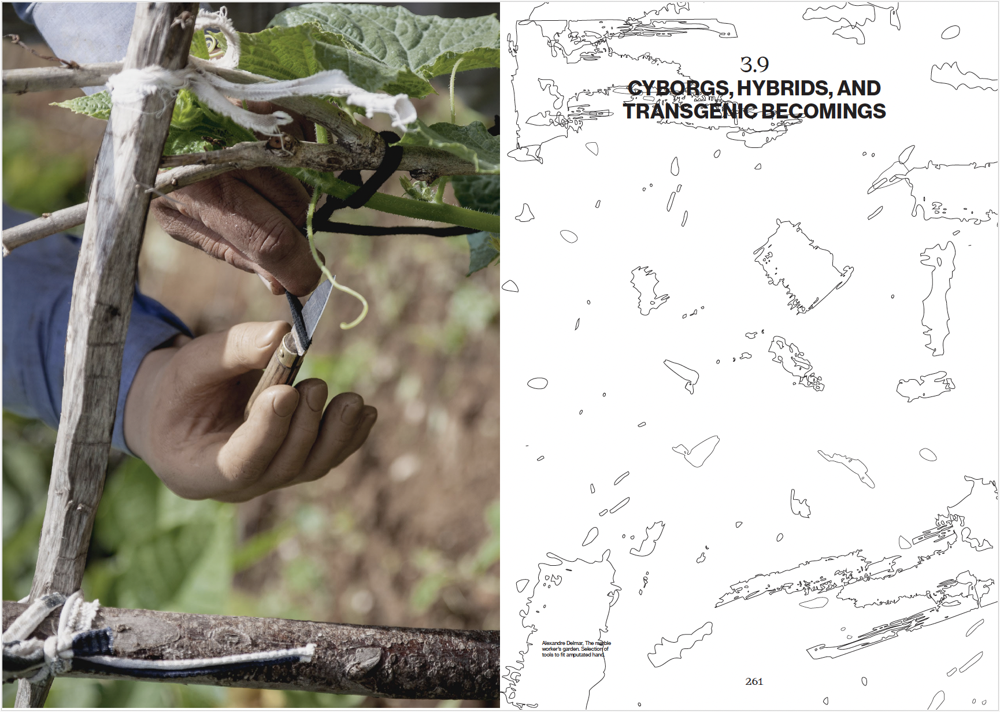
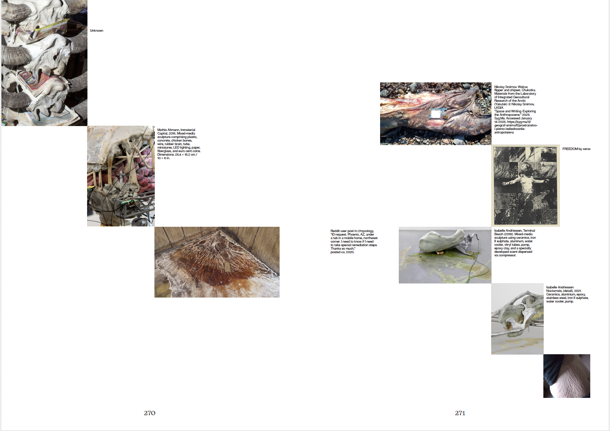
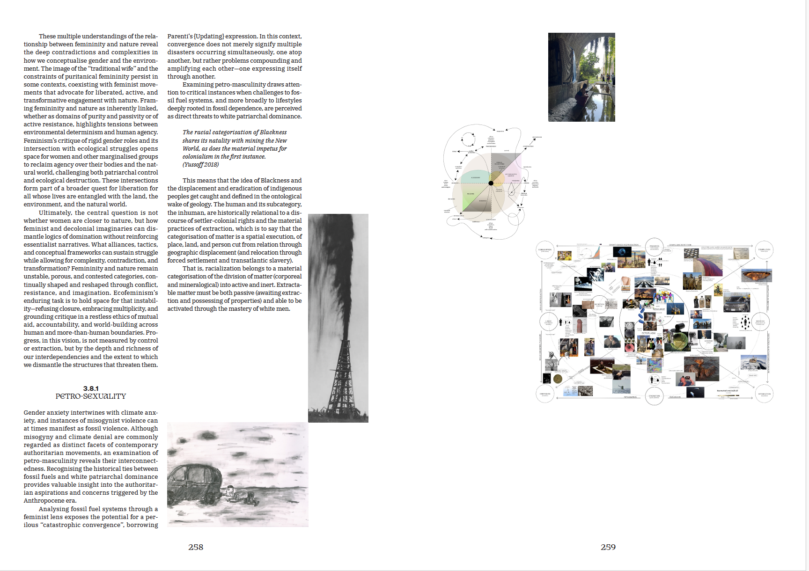
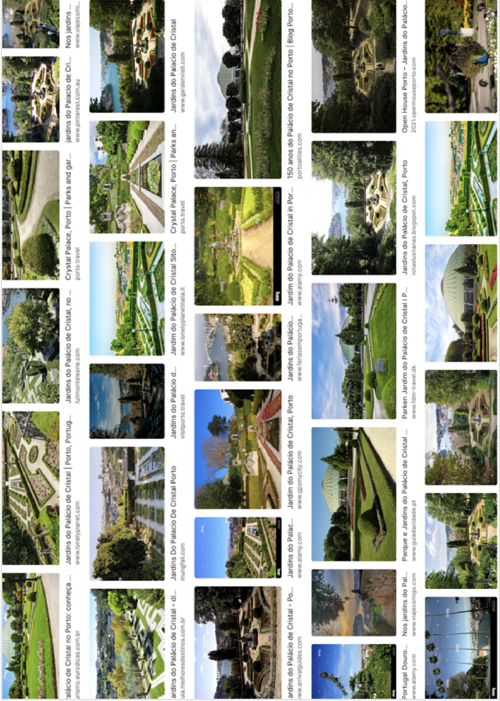
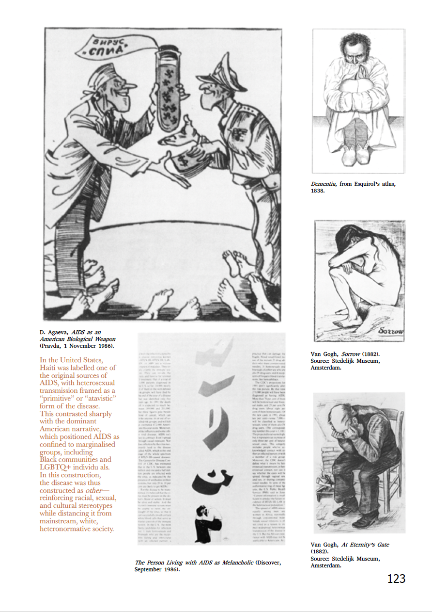
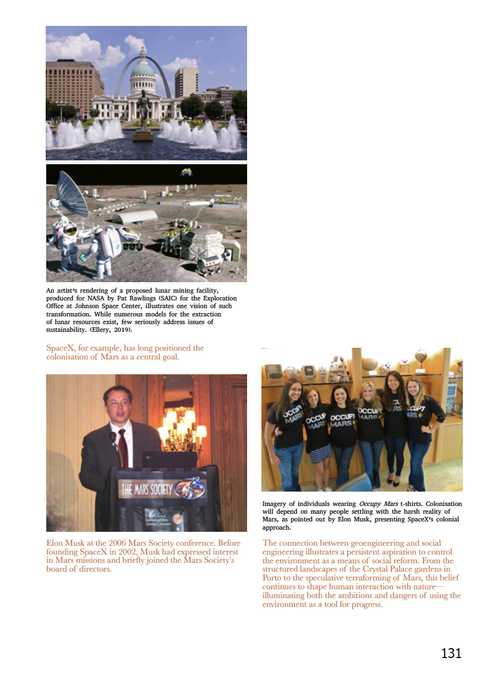
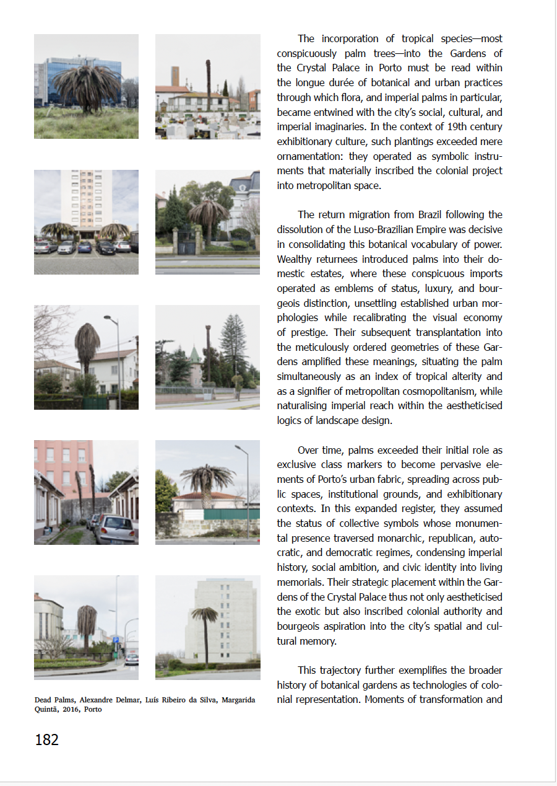
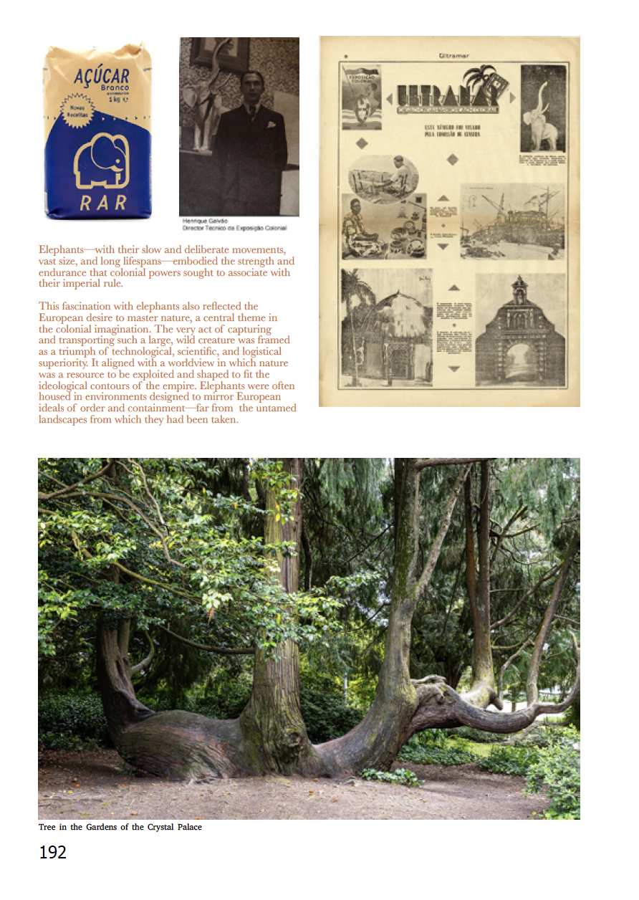

Investigação · imagem · arquivo · ecologia crítica
Reconfiguring the Garden
Dissertação em Design da Imagem sobre visualidades pós-naturais, disrupções semióticas e a construção cultural da ideia de natureza.
Este projeto de investigação explora a construção cultural da ideia de “natureza” através do caso dos Jardins do Palácio de Cristal, no Porto.
A dissertação articula teoria crítica, práticas artísticas, investigação visual e metodologias situadas para questionar narrativas históricas, coloniais e ideológicas associadas à representação do natural.
Temas
- Jardim enquanto dispositivo visual e político
- Ecologia, memória e colonialismo
- Arquivo, imagem e construção do natural
- Género, corpo e relações multiespécie
- Estratégias críticas de reimaginação do jardim
Através da análise de arquivos, imagens, cartografias, práticas corporais e processos colaborativos, o trabalho propõe uma leitura do jardim enquanto espaço de resistência, cuidado e transformação.
A investigação desenvolve uma abordagem crítica e especulativa, procurando desestabilizar a separação entre natureza e cultura e repensar o jardim como campo de disputa visual, histórica e política.
Fragmentos visuais, páginas e materiais associados à investigação.







